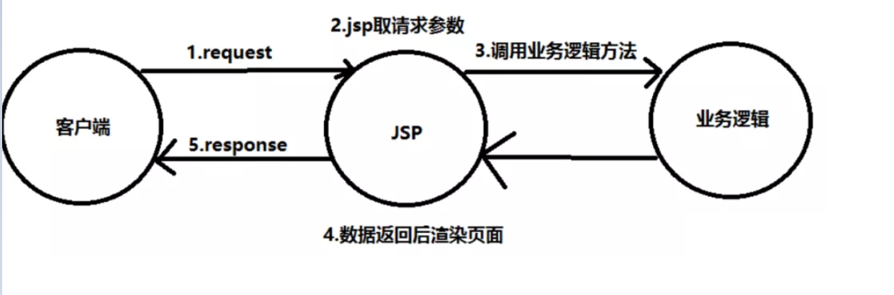
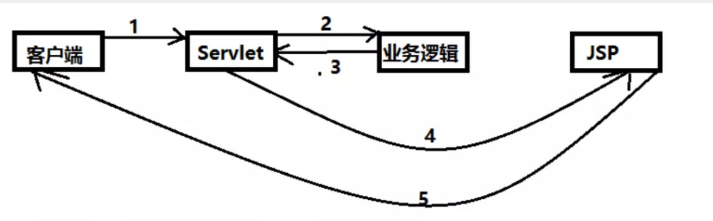
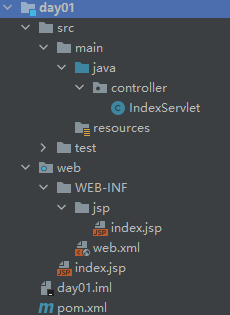
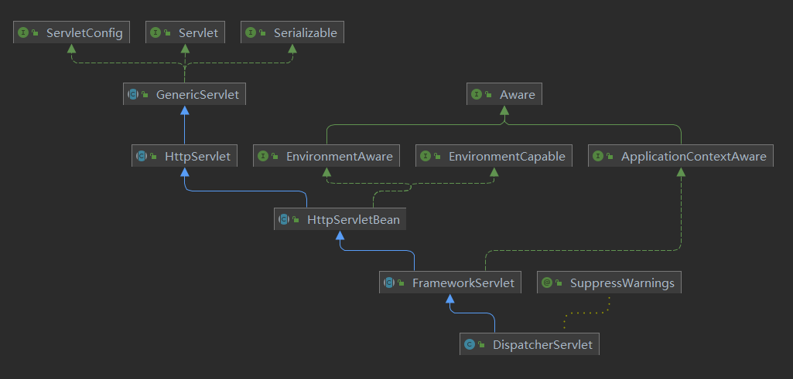
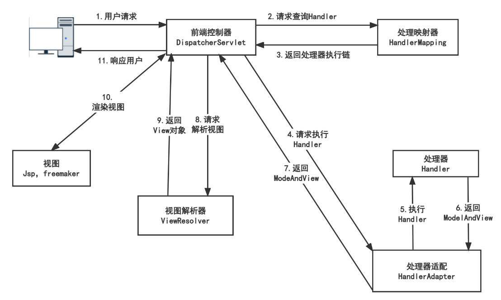
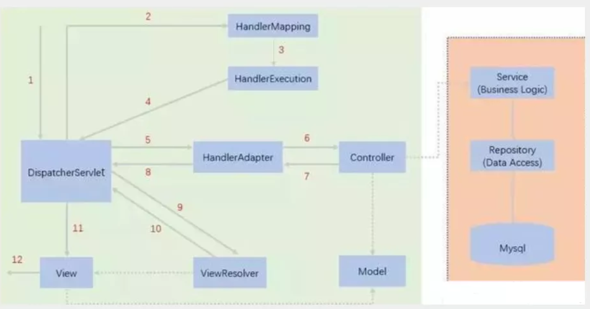
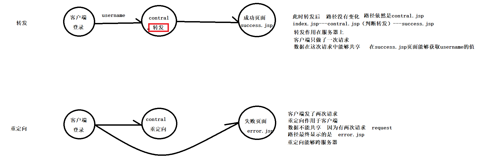

实训第二周笔记
MVC概念
- MVC是模型(Model)、视图(View)、控制器(Controller)的简写，是一种软件设计规范。
- 将业务逻辑、数据、显示分离的方式来组织代码。
- 主要作用是降低了视图与业务逻辑间的双向耦合。
- MVC不是一种设计模式，MVC是一种架构模式。注：不同的MVC存在差异。
**Model(模型)**：数据模型，提供要展示的数据，包含数据和行为，可以认为是领域模型或JavaBean组件(包含数据和行为)，不过现在都分离为:Value Object(数据Dao)和服务层(行为Service)。也就是模型提供了模型查询和模型数据的状态更新功能，包括数据和业务。
**View(视图)**：负责进行模型的展示，一般为我们见到的用户界面，客户所想看到的东西。
**Controller(控制器)**：接收用户请求，委托给模型进行处理（状态改变），处理完毕后把返回的模型数据返回给视图，由视图负责展示。也就是说控制器完成了调度员的工作。
Model1时代
在web早期的开发中，通常采用的都是Model1。
Model1中，主要分为两层，视图层和模型层。

Model1优点：架构简单，比较适合小型项目开发；
Model1缺点：JSP职责不单一，职责过重，不便于维护；
Model2时代
Model2把一个项目分成三部分，包括视图、控制、模型。

- 用户发请求
- Servlet接收请求数据，并调用对应的业务逻辑方法
- 业务处理完毕，返回更新后的数据给servlet
- servlet转向到JSP，由JSP来渲染页面
- 响应给前端更新后的页面
- Controller：
- 取得表单数据
- 调用业务逻辑
- 转向指定页面
- Model：
- 业务逻辑
- 保存数据状态
- View
- 展示页面
Java Web回顾
引入依赖
1 | <dependency> |
创建对应项目结构

编写Servlet
1 | package controller; |
修改web.xml
1 |
|
再将项目发布到Tomcat上，即可在 localhost:8080/my访问Servlet，通过/my?method=add/delete，即可传入参数
MVC框架要做的事情
- 将url映射到Java类或Java类的方法
- 封装用户提交的数据
- 处理请求 – 调用相关的业务处理 – 封装响应数据
- 将响应数据进行渲染
SpringMVC
SpringMVC是Spring Framework的一部分，是基于Java实现MVC的轻量级Web框架
SpringMVC优点
- 轻量级，易上手
- 高效，基于请求响应的MVC框架
- 与Spring兼容性好，无缝结合
- 约定优于配置
- 功能强大：RESTful、数据验证、格式化、本地化、主题等
- 简洁灵活
Spring的Web框架围绕*DispatcherServlet[调度Servlet]设计*
中心调度器
DispatcherServlet的作用是将请求分发到不同的处理器。从Spring 2.5开始，使用Java 5或者以上版本的用户可以采用基于注解形式进行开发，十分简洁
Spring MVC框架像许多其他MVC框架一样, 以请求为驱动 , 围绕一个中心Servlet分派请求及提供其他功能，**DispatcherServlet是一个实际的Servlet (它继承自HttpServlet 基类)**。

SpringMVC执行原理

流程：
- 用户请求首先被DispatcherServlet拦截
- DispatcherServelt在HandlerMapping寻找对应Handler
- HandlerMapping返回具体处理器执行链
- DIspatcherServlet再通过HandlerAdapter寻找指定Handler
- Handler执行完具体逻辑
- Handler返回ModelAndView给HandlerAdapter
- 通过HandlerAdapter返回给DispatcherServlet
- DispatcherServlet请求ViewResolver
- ViewResolver将view对象完整路径返回
- DIspatcherServlet将model数据渲染至视图
- 返回给用户。

DispatcherServlet：前置控制器，SpringMVC控制中心，接收/拦截用户所有请求
HandlerMapping：处理器映射器，根据请求url查找Handler，返回HandlerExecutionChain
HandlerAdapter：处理器适配器，按照特点规则执行Handler
ViewResolver：返回视图逻辑名
SpringMVC使用入门
基于配置
- 首先是在web.xml配置DispacherServlet
1 |
|
2. 编写springmvc-servlet.xml
- 注入HandlerMapping
- 注入HandlerAdapter
- 注入ViewResolver
- 注入Handler id则指明了请求url（编写实现Controller接口后的类后注入）
1 |
|
3. 编写Controller
1 | package controller; |
可以看到 MV.setViewName(“Hello”)，而Hello则通过HandlerAdapter返回给DispatcherServlet，DIspatcherServlet将通过ViewReslover处理后获得最终视图名 /WEB-INF/jsp/hello.jsp
- 我们在WEB-INF/jsp编写jsp页面
1 | <%@ page contentType="text/html;charset=UTF-8" language="java" %> |
- 将项目发布至tomcat，访问 localhost:8080/hello,我们将看到由DispatcherServlet根据Model渲染后的Html页面
基于注解
在web.xml中配置DispatcherServlet，与上文相同
编写springmvc-servlet.xml
1 |
|
- 编写Controller
1 | package controller; |
- 通过localhost:8080/HelloController/hello即可访问，在类上附加@RequestMapping，会使得类内所有方法RequestMapping再附加当前类RequestMapping
总结
DispatcherServlet需要我们手动配置，而HandlerMapping与HandlerAdapter只需要我们注入即可，而ViewResolve需要我们根据具体配置注入时写明属性。
RESTful与Controller
什么是RESTful风格
RESTFUL是一种网络应用程序的设计风格和开发方式
通过POST、DELETE、PUT、GET,根据不同请求方法，虽然请求的url相同，但处理的接口是不同。
示例
传统方式操作资源 ：通过不同的参数来实现不同的效果 方法单一，post 和 get
http://127.0.0.1/item/deleteItem.action?id=1 删除,GET或POST
使用RESTful操作资源 ：可以通过不同的请求方式来实现不同的效果
- http://127.0.0.1/item/1 查询,GET
- http://127.0.0.1/item 新增,POST
- http://127.0.0.1/item 更新,PUT
- http://127.0.0.1/item/1 删除,DELETE
SpringMVC中RESTful风格
通过**@PathVariable**注解实现在url取出对应值
通过**@RequestMapping或组合注解**指定请求方法
相关注解
接口映射注解
@RequestMapping
在@RequestMapping注解中，value指定url，method指定方法。
1 |
|
组合注解
method已指定
- @GetMapping
- @PostMapping
- @PutMapping
- @DeleteMapping
- @PatchMapping
参数注解
@PathVariable
在请求url部分使用\{}占位，既可以在方法参数列表中取得
可以使用@PathVariable(a) 指定方法参数与\{b}占位变量对应
1 |
|
@RequestParam
使用@RequestParam(name) 指定传入参数名与方法参数名的对应
1 |
|
页面跳转
根据上文，我们可以知道在SpringMVC中存在ViewResolve，他会对一个页面名字进行拼接，再返回页面具体位置
1 | <!-- 添加 视图解析器--> |
Model跳转
1 |
|
return的字符串即为返回给ViewResolve的页面名
ModelAndView跳转
1 | package controller; |
mv.setViewName 即设置了页面名返回给ViewResolve
重定向与转发
重定向与转发的区别
- request.getRequestDispatcher(“index.jsp”).forward(request,response); //转发方式
- response.sendRedirect(“index.jsp”); //重定向

客户端是无法直接访问WEB-INF下的jsp页面，重定向等于重新访问url，所以只能通过转发来访问。
SpringMVC中的重定向与转发
当我们没有配置ViewResolve，页面以return方式进行返回
- return “forward:xxx” 转发至/xxx
- return “xxxx” 转发至/xxx
- return “redirect:xxx” 重定向至/xxx
当我们配置ViewResolve后，则会发生变化
- return “forward:xxx” 转发至/xxx
- return “xxxx” 转发至经过ViewResolve处理过后具体xx/(xxx)xx
- return “redirect:xxx” 重定向至/xxx
1 |
|
数据处理
数据处理
当提交的域名称与请求参数一致
自动取得对应值
1 |
|
当提交的域名称与请求参数不一致
通过@RequestParam取得对应值
1 |
|
传入对象
前端传递的参数名和对象名必须一致，否则为null。
1 |
|
前端展示
ModelAndView
实现了Controller接口，可以设置视图名称
1 | public class HelloController implements Controller{ |
ModelMap
1 |
|
Model
1 |
|
对比
1 | Model 继承了ModelMap类，当他接收了List后，实际上为ModelMap |
乱码问题
1 | 1.数据库 |
控制台乱码
在IDEA中为Tomcat设置VM options
-Dfile.encoding=UTF-8
还可以在tomcat所在conf文件夹中修改server.xml与logging.properties中指定的编码格式
返回页面中取值乱码
方式一：设置Filter
1 | package com.day02.filter; |
在web.xml注册FIlter
1 |
|
这样就会对Request与Response中的数据设置了编码格式，当然SpringMVC已经为我们提前准备了过滤器。
方式二：使用Spring提供的字符编码过滤器
1 |
|
JSON交互处理
JSON的优点
- JSON(JavaScript Object Notation, JS 对象标记) 是一种轻量级的数据交换格式，目前使用特别广泛。
- 采用完全独立于编程语言的文本格式来存储和表示数据。
- 简洁和清晰的层次结构使得 JSON 成为理想的数据交换语言。
- 易于人阅读和编写，同时也易于机器解析和生成，并有效地提升网络传输效率。
返回数据给前端
- 后端代码
1 | package com.day02.controller; |
在这里我们使用了@ResponseBody注解，方法返回值则不会被ViewResolve处理，而是直接以字符串的形式进行返回,@ResponseBody也可以对整个类进行标记。
Spring同样提供了组合注解@RestController，使用RestController标注的类，不仅仅会被注册进Spring容器，这个类内所有的方法，都会以字符串形式返回给前端。
- 前端接收
1 | $(function () { |
JavaScript中对象与json字符串的转换
- json字符串转换为JavaScript对象
1 | var json = JSON.parse('{"a": "Hello", "b": "World"}'); |
- JavaScript对象转换为字符串
1 | var json = JSON.stringify({a: 'Hello', b: 'World'}); |
返回数据时乱码问题
方式一
修改@RequstMapping属性
这种方式指定了返回类型，所以Ajax中的回调函数不需要再把返回值处理为JavaScript对象
1 | //produces:指定响应体返回类型和编码 |
方式二
注册StringHttpMessageConverter
1 |
|
如何返回JSON字符串
Jackson
1 | <dependency> |
示例：
1 | public String demo4() throws JsonProcessingException { |
FastJson
1 | <dependency> |
示例：
1 | public String getSheng(Model model){ |
FastJson还提供了许多方法，方法名字非常直观
1 | package com. controller; |
Ajax使用
Ajax简介
AJAX = Asynchronous JavaScript and XML（异步的 JavaScript 和 XML）。
AJAX 是一种在无需重新加载整个网页的情况下，能够更新部分网页的技术。
Ajax 不是一种新的编程语言，而是一种用于创建更好更快以及交互性更强的Web应用程序的技术。
传统的网页(即不用ajax技术的网页)，想要更新内容或者提交一个表单，都需要重新加载整个网页。
使用ajax技术的网页，通过在后台服务器进行少量的数据交换，就可以实现异步局部更新。
使用Ajax，用户可以创建接近本地桌面应用的直接、高可用、更丰富、更动态的Web用户界面。
Jquery Ajax
jQuery 库拥有完整的 Ajax 兼容套件。其中的函数和方法允许我们在不刷新浏览器的情况下从服务器加载数据，主要就是方便。。。
Ajax
1 | $.ajax({ |
load
1 | //在测试是以POST发送出去的请求,用于对选中标签的html内容替换为选中内容 |
getJSON
1 | $.getJSON( |
get
1 | $.get(url,data,success(response,status,xhr),dataType) |
post
1 | $.post(url,data,success(data, textStatus, jqXHR),dataType) |
示例
示例一
后端返回
1 | package com.day02.controller; |
前端代码
1 | <%@ taglib prefix="c" uri="http://java.sun.com/jsp/jstl/core" %> |
示例二
返回html
1 | package com.day02.controller; |
返回sheng.jsp
1 | <%@ taglib prefix="c" uri="http://java.sun.com/jsp/jstl/core" %> |
返回shi.jsp
1 | <%@ taglib prefix="c" uri="http://java.sun.com/jsp/jstl/core" %> |
在上面两个接口，分别返回了jsp页面，通过循环返回了html代码给前端
接收方式一
发送post请求获得返回在进行替换
1 | <%@ taglib prefix="c" uri="http://java.sun.com/jsp/jstl/core" %> |
接收方式二
load()直接返送请求将html替换为返回值
1 | <%@ taglib prefix="c" uri="http://java.sun.com/jsp/jstl/core" %> |
示例三
模拟用户名检查
后端接收username，模拟查询返回一个json结果
1 |
|
前端在input标签设定onblur失焦方法，当失去选中状态，发送请求，再根据返回值在span标签内显示
1 | <%@ page contentType="text/html;charset=UTF-8" language="java" %> |
SSM整合
环境说明
- IDEA
- Mysql
- Tomcat
- Maven
数据库
1 | CREATE DATABASE `ssmbuild`; |
环境搭建
- maven依赖
1 |
|
Mybatis层
db.properties
1 | jdbc.driver=com.mysql.cj.jdbc.Driver |
mybatis-config
1 |
|
mapper
1 | package com.dao; |
mapper.xml
1 |
|
Service层
接口
1 | package com.service; |
实现类
1 | package com.service; |
Spring
dao层
1 |
|
service层
1 |
|
Spring MVC层
1 |
|
合并所有spring配置
1 |
|
controller层
1 | package com.controller; |
web.xml
1 |
|
JSP页面略
总结
至底向上配置,一层一层依次依赖
拦截器使用
拦截器配置方式
在MVC配置文件内
1 |
|
拦截器编写
1 | package com.interceptor; |
这里我们实现了对非登录用户的拦截,对于已登录用户,在session中会存储当前用户信息
1 |
|
文件上传下载
依赖
1 | <!--Servlet--> |
文件上传
单文件
页面
1 | <%@ page contentType="text/html;charset=UTF-8" language="java" %> |
Controller
1 |
|
注释的是我第一次的写法，第二次更改我把inputStream省略了，直接让outputStream写出了整个文件，但并未对InputStream创建和关闭省略掉（嗯。。就试试，懒得改了，另一种用法）。
多文件
页面
1 | <%@ page contentType="text/html;charset=UTF-8" language="java" %> |
Controller
1 |
|
其实就是对接收的file数组循环写入
文件下载
1 | <a href="${ctx}/download">点击下载</a> |
Controller
1 |
|
RESTful风格文件下载
仅作补充，因为我直接{fileName}也没有问题！。。。
1 |
restFul 风格一般会把文件后缀名截取掉, 加上 :.+ 来保留文件后缀名